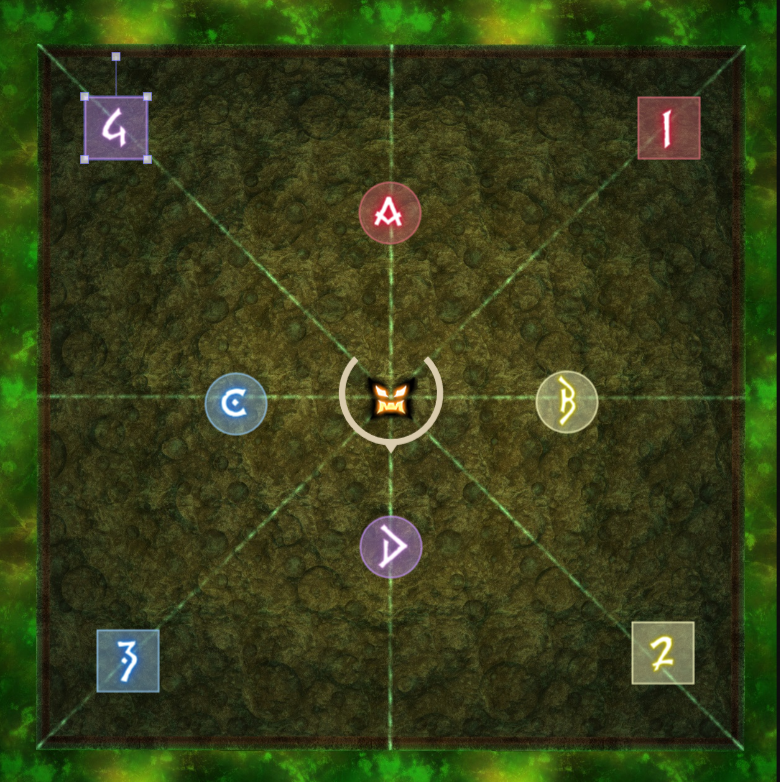

Abyssos: The Fifth Circle (Savage)
Party Finder
Search Comment
role-pair | H:123 R432 T:ABC M:DCB | THMR-ABCD | R4: G1mid, G2wall | R5: G1 NW(Q4) G2 SE(Q2) | R6: Start 1 Go CCW
Definitions
- role pair
Soak poison puddles with your role buddy. e.g. Ranged DPS share a puddle, Healers share a puddle, etc
- H:123 R432 T:ABC M:DCB
Start at respective marker. When puddles spawn, move in your order to the nearest puddle inclusive (that is, if the puddle spawns at your start location, stay there)
Example
Healers start at waymark 1, puddle spawns at waymark 2, healers will move to waymark 2 and absorb tower.
- THMR-ABCD
- role pairs in relation to the cardinal markers for Devour puddle soaks
Tanks to A | Healers to B
Melee DPS to C | Ranged DPS to D
- R4: G1mid, G2wall (Ruby Glow 4)
Topaz Stones spawns two sets of yellow crystals — one set of three and another set of two. Move to the side with two yellow crystals.
Light parties stack on the two crystals. Group 1 takes the crystal closest to the center of the arena, group 2 takes the crystal closest to the wall
- R5: G1 NW(Q4) G2 SE(Q2) (Ruby Glow 5)
Group one starts in Quadrant 4 (Intersection of North and West)
Group two starts in Quadrant 2 (Intersection of South and East)
- R6: Start Go CCW (Ruby Glow 6)
Start at waymark one. Moving counter-clockwise inclusively, move to the first quadrant with 2 stones.
Waymarks

Waymark import
Warning
A bunch of shitty players have been crying about people clearing content they don’t even qualify to see the cutscene for while using preloaded waymarks. So SE was forced to respond in true SE fashion:
You can read their response here.
{kind=link}
- In Summary:
SE acknowledges that they made a shit waymark system
SE then blames players for circumventing it
SE demands you delete the way markers now
But SE also acknowledges that they’re good waymarks and they’ll make it so you can manually remake the same exact markers.
But not yet. For now just delete your good waymarks and then we will let you remake them exactly the same sometime later, maybe. Idiot.
No one has been punished for using the waymarks (except that one idiot, but he deserved it the most)
No one will be banned for using the markers (unless they arbitrary decide otherwise)
At the end of the day the odds of you getting caught using 3rd party addons are slim to none unless you do something stupid. But as always use at your own risk.
{"Name":"Fight","MapID":873,"A":{"X":100.0,"Y":-300.0,"Z":93.0,"ID":0,"Active":true},"B":{"X":107.0,"Y":-300.0,"Z":100.0,"ID":1,"Active":true},"C":{"X":100.0,"Y":-300.0,"Z":107.0,"ID":2,"Active":true},"D":{"X":93.0,"Y":-300.0,"Z":100.0,"ID":3,"Active":true},"One":{"X":112.5,"Y":-300.0,"Z":87.5,"ID":4,"Active":true},"Two":{"X":112.5,"Y":-300.0,"Z":112.5,"ID":5,"Active":true},"Three":{"X":87.5,"Y":-300.0,"Z":112.5,"ID":6,"Active":true},"Four":{"X":87.5,"Y":-300.0,"Z":87.5,"ID":7,"Active":true}}